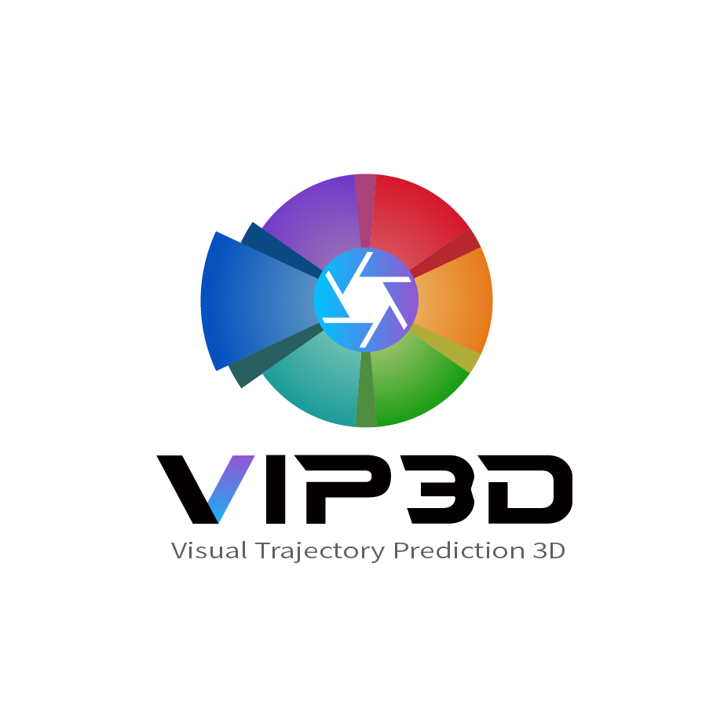

ViP3D: End-to-end Visual Trajectory Prediction
via 3D Agent Queries
Junru Gu1*,
Chenxu Hu1*,
Tianyuan Zhang2,3,
Xuanyao Chen2,4,
Yilun Wang5,
Yue Wang6,
Hang Zhao1,2
* Equal contribution
1 IIIS, Tsinghua University,
2 Shanghai Qi Zhi Institute,
3 CMU,
4 Fudan University,
5 Li Auto,
6 MIT
ViP3D is the first vision-based approach to predict future trajectories of agents for autonomous driving, modeling instance-wise agent detection, tracking and prediction.